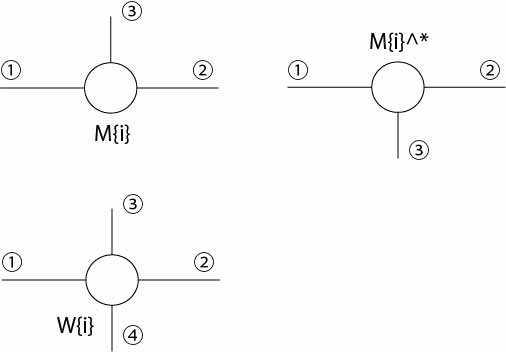

% HamiltonianをMPOで定義する。MPOとは次で定義されるようなもののことである：
Error: File: /Users/yoshi/Documents/petraWorkspace/DMRG/DMRG_Hotta/Hamiltonian.m Line: 53 Column: 10 The function "randomMPS" was closed with an 'end', but at least one other function definition was not. To avoid confusion when using nested functions, it is illegal to use both conventions in the same file.

したがって

% はHamiltonian()の入力には使えない。しかし第m項だけを取り出せばdim(b_l)=1のMPOになっているので、 % Hamiltonian()の入力に使える。
mps = { M(1), ..., M(N) }. M{i}はi番目の粒子に対応するD * D * dのテンソル。
